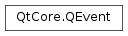

QEvent¶
Inherited by: QGraphicsSceneEvent, QGraphicsSceneMouseEvent, QGraphicsSceneWheelEvent, QGraphicsSceneContextMenuEvent, QGraphicsSceneHoverEvent, QGraphicsSceneDragDropEvent, QGraphicsSceneHelpEvent, QGraphicsSceneResizeEvent, QGraphicsSceneMoveEvent, QFocusEvent, QScrollPrepareEvent, QPaintEvent, QScrollEvent, QMoveEvent, QExposeEvent, QInputEvent, QMouseEvent, QHoverEvent, QContextMenuEvent, QTouchEvent, QWheelEvent, QTabletEvent, QNativeGestureEvent, QKeyEvent, QActionEvent, QEnterEvent, QFileOpenEvent, QToolBarChangeEvent, QShortcutEvent, QWindowStateChangeEvent, QInputMethodQueryEvent, QDropEvent, QDragMoveEvent, QDragEnterEvent, QTimerEvent, QChildEvent, QDragLeaveEvent, QDynamicPropertyChangeEvent, QHelpEvent, QStatusTipEvent, QWhatsThisClickedEvent, QResizeEvent, QCloseEvent, QIconDragEvent, QShowEvent, QHideEvent, QInputMethodEvent, QGestureEvent, QStateMachine.SignalEvent, QStateMachine.WrappedEvent
Synopsis¶
Functions¶
- def
accept() - def
ignore() - def
isAccepted() - def
setAccepted(accepted) - def
spontaneous() - def
type()
Static functions¶
- def
registerEventType([hint=-1])
Detailed Description¶
The
PySide2.QtCore.QEventclass is the base class of all event classes. Event objects contain event parameters.Qt’s main event loop (
QCoreApplication.exec()) fetches native window system events from the event queue, translates them into QEvents, and sends the translated events toPySide2.QtCore.QObjects.In general, events come from the underlying window system (
PySide2.QtCore.QEvent.spontaneous()returnstrue), but it is also possible to manually send events usingQCoreApplication.sendEvent()andQCoreApplication.postEvent()(PySide2.QtCore.QEvent.spontaneous()returnsfalse).
QObjectsreceive events by having theirQObject.event()function called. The function can be reimplemented in subclasses to customize event handling and add additional event types;QWidget.event()is a notable example. By default, events are dispatched to event handlers likeQObject.timerEvent()andQWidget.mouseMoveEvent().QObject.installEventFilter()allows an object to intercept events destined for another object.The basic
PySide2.QtCore.QEventcontains only an event type parameter and an “accept” flag. The accept flag set withPySide2.QtCore.QEvent.accept(), and cleared withPySide2.QtCore.QEvent.ignore(). It is set by default, but don’t rely on this as subclasses may choose to clear it in their constructor.Subclasses of
PySide2.QtCore.QEventcontain additional parameters that describe the particular event.
-
class
PySide2.QtCore.QEvent(type)¶ -
class
PySide2.QtCore.QEvent(other) Parameters: - type –
PySide2.QtCore.QEvent.Type - other –
PySide2.QtCore.QEvent
Contructs an event object of type
type.Attempts to copy the
otherevent.Copying events is a bad idea, yet some Qt 4 code does it (notably,
PySide2.QtWidgets.QApplicationand the state machine).- type –
-
PySide2.QtCore.QEvent.Type¶ This enum type defines the valid event types in Qt. The event types and the specialized classes for each type are as follows:
Constant Description QEvent.None Not an event. QEvent.ActionAdded A new action has been added ( PySide2.QtGui.QActionEvent).QEvent.ActionChanged An action has been changed ( PySide2.QtGui.QActionEvent).QEvent.ActionRemoved An action has been removed ( PySide2.QtGui.QActionEvent).QEvent.ActivationChange A widget’s top-level window activation state has changed. QEvent.ApplicationActivate This enum has been deprecated. Use instead. QEvent.ApplicationActivated This enum has been deprecated. Use instead. QEvent.ApplicationDeactivate This enum has been deprecated. Use instead. QEvent.ApplicationFontChange The default application font has changed. QEvent.ApplicationLayoutDirectionChange The default application layout direction has changed. QEvent.ApplicationPaletteChange The default application palette has changed. QEvent.ApplicationStateChange The state of the application has changed. QEvent.ApplicationWindowIconChange The application’s icon has changed. QEvent.ChildAdded An object gets a child ( PySide2.QtCore.QChildEvent).QEvent.ChildPolished A widget child gets polished ( PySide2.QtCore.QChildEvent).QEvent.ChildRemoved An object loses a child ( PySide2.QtCore.QChildEvent).QEvent.Clipboard The clipboard contents have changed. QEvent.Close Widget was closed ( PySide2.QtGui.QCloseEvent).QEvent.CloseSoftwareInputPanel A widget wants to close the software input panel (SIP). QEvent.ContentsRectChange The margins of the widget’s content rect changed. QEvent.ContextMenu Context popup menu ( PySide2.QtGui.QContextMenuEvent).QEvent.CursorChange The widget’s cursor has changed. QEvent.DeferredDelete The object will be deleted after it has cleaned up (QDeferredDeleteEvent) QEvent.DragEnter The cursor enters a widget during a drag and drop operation ( PySide2.QtGui.QDragEnterEvent).QEvent.DragLeave The cursor leaves a widget during a drag and drop operation ( PySide2.QtGui.QDragLeaveEvent).QEvent.DragMove A drag and drop operation is in progress ( PySide2.QtGui.QDragMoveEvent).QEvent.Drop A drag and drop operation is completed ( PySide2.QtGui.QDropEvent).QEvent.DynamicPropertyChange A dynamic property was added, changed, or removed from the object. QEvent.EnabledChange Widget’s enabled state has changed. QEvent.Enter Mouse enters widget’s boundaries ( PySide2.QtGui.QEnterEvent).QEvent.EnterEditFocus An editor widget gains focus for editing. QT_KEYPAD_NAVIGATIONmust be defined.QEvent.EnterWhatsThisMode Send to toplevel widgets when the application enters “What’s This?” mode. QEvent.Expose Sent to a window when its on-screen contents are invalidated and need to be flushed from the backing store. QEvent.FileOpen File open request ( PySide2.QtGui.QFileOpenEvent).QEvent.FocusIn Widget or Window gains keyboard focus ( PySide2.QtGui.QFocusEvent).QEvent.FocusOut Widget or Window loses keyboard focus ( PySide2.QtGui.QFocusEvent).QEvent.FocusAboutToChange Widget or Window focus is about to change ( PySide2.QtGui.QFocusEvent)QEvent.FontChange Widget’s font has changed. QEvent.Gesture A gesture was triggered ( PySide2.QtWidgets.QGestureEvent).QEvent.GestureOverride A gesture override was triggered ( PySide2.QtWidgets.QGestureEvent).QEvent.GrabKeyboard Item gains keyboard grab ( PySide2.QtWidgets.QGraphicsItemonly).QEvent.GrabMouse Item gains mouse grab ( PySide2.QtWidgets.QGraphicsItemonly).QEvent.GraphicsSceneContextMenu Context popup menu over a graphics scene ( PySide2.QtWidgets.QGraphicsSceneContextMenuEvent).QEvent.GraphicsSceneDragEnter The cursor enters a graphics scene during a drag and drop operation ( PySide2.QtWidgets.QGraphicsSceneDragDropEvent).QEvent.GraphicsSceneDragLeave The cursor leaves a graphics scene during a drag and drop operation ( PySide2.QtWidgets.QGraphicsSceneDragDropEvent).QEvent.GraphicsSceneDragMove A drag and drop operation is in progress over a scene ( PySide2.QtWidgets.QGraphicsSceneDragDropEvent).QEvent.GraphicsSceneDrop A drag and drop operation is completed over a scene ( PySide2.QtWidgets.QGraphicsSceneDragDropEvent).QEvent.GraphicsSceneHelp The user requests help for a graphics scene ( PySide2.QtGui.QHelpEvent).QEvent.GraphicsSceneHoverEnter The mouse cursor enters a hover item in a graphics scene ( PySide2.QtWidgets.QGraphicsSceneHoverEvent).QEvent.GraphicsSceneHoverLeave The mouse cursor leaves a hover item in a graphics scene ( PySide2.QtWidgets.QGraphicsSceneHoverEvent).QEvent.GraphicsSceneHoverMove The mouse cursor moves inside a hover item in a graphics scene ( PySide2.QtWidgets.QGraphicsSceneHoverEvent).QEvent.GraphicsSceneMouseDoubleClick Mouse press again (double click) in a graphics scene ( PySide2.QtWidgets.QGraphicsSceneMouseEvent).QEvent.GraphicsSceneMouseMove Move mouse in a graphics scene ( PySide2.QtWidgets.QGraphicsSceneMouseEvent).QEvent.GraphicsSceneMousePress Mouse press in a graphics scene ( PySide2.QtWidgets.QGraphicsSceneMouseEvent).QEvent.GraphicsSceneMouseRelease Mouse release in a graphics scene ( PySide2.QtWidgets.QGraphicsSceneMouseEvent).QEvent.GraphicsSceneMove Widget was moved ( PySide2.QtWidgets.QGraphicsSceneMoveEvent).QEvent.GraphicsSceneResize Widget was resized ( PySide2.QtWidgets.QGraphicsSceneResizeEvent).QEvent.GraphicsSceneWheel Mouse wheel rolled in a graphics scene ( PySide2.QtWidgets.QGraphicsSceneWheelEvent).QEvent.Hide Widget was hidden ( PySide2.QtGui.QHideEvent).QEvent.HideToParent A child widget has been hidden. QEvent.HoverEnter The mouse cursor enters a hover widget ( PySide2.QtGui.QHoverEvent).QEvent.HoverLeave The mouse cursor leaves a hover widget ( PySide2.QtGui.QHoverEvent).QEvent.HoverMove The mouse cursor moves inside a hover widget ( PySide2.QtGui.QHoverEvent).QEvent.IconDrag The main icon of a window has been dragged away ( PySide2.QtGui.QIconDragEvent).QEvent.IconTextChange Widget’s icon text has been changed. (Deprecated) QEvent.InputMethod An input method is being used ( PySide2.QtGui.QInputMethodEvent).QEvent.InputMethodQuery A input method query event ( PySide2.QtGui.QInputMethodQueryEvent)QEvent.KeyboardLayoutChange The keyboard layout has changed. QEvent.KeyPress Key press ( PySide2.QtGui.QKeyEvent).QEvent.KeyRelease Key release ( PySide2.QtGui.QKeyEvent).QEvent.LanguageChange The application translation changed. QEvent.LayoutDirectionChange The direction of layouts changed. QEvent.LayoutRequest Widget layout needs to be redone. QEvent.Leave Mouse leaves widget’s boundaries. QEvent.LeaveEditFocus An editor widget loses focus for editing. QT_KEYPAD_NAVIGATION must be defined. QEvent.LeaveWhatsThisMode Send to toplevel widgets when the application leaves “What’s This?” mode. QEvent.LocaleChange The system locale has changed. QEvent.NonClientAreaMouseButtonDblClick A mouse double click occurred outside the client area ( PySide2.QtGui.QMouseEvent).QEvent.NonClientAreaMouseButtonPress A mouse button press occurred outside the client area ( PySide2.QtGui.QMouseEvent).QEvent.NonClientAreaMouseButtonRelease A mouse button release occurred outside the client area ( PySide2.QtGui.QMouseEvent).QEvent.NonClientAreaMouseMove A mouse move occurred outside the client area ( PySide2.QtGui.QMouseEvent).QEvent.MacSizeChange The user changed his widget sizes ( macOS only). QEvent.MetaCall An asynchronous method invocation via QMetaObject.invokeMethod().QEvent.ModifiedChange Widgets modification state has been changed. QEvent.MouseButtonDblClick Mouse press again ( PySide2.QtGui.QMouseEvent).QEvent.MouseButtonPress Mouse press ( PySide2.QtGui.QMouseEvent).QEvent.MouseButtonRelease Mouse release ( PySide2.QtGui.QMouseEvent).QEvent.MouseMove Mouse move ( PySide2.QtGui.QMouseEvent).QEvent.MouseTrackingChange The mouse tracking state has changed. QEvent.Move Widget’s position changed ( PySide2.QtGui.QMoveEvent).QEvent.NativeGesture The system has detected a gesture ( PySide2.QtGui.QNativeGestureEvent).QEvent.OrientationChange The screens orientation has changes (QScreenOrientationChangeEvent). QEvent.Paint Screen update necessary ( PySide2.QtGui.QPaintEvent).QEvent.PaletteChange Palette of the widget changed. QEvent.ParentAboutToChange The widget parent is about to change. QEvent.ParentChange The widget parent has changed. QEvent.PlatformPanel A platform specific panel has been requested. QEvent.PlatformSurface A native platform surface has been created or is about to be destroyed ( QPlatformSurfaceEvent).QEvent.Polish The widget is polished. QEvent.PolishRequest The widget should be polished. QEvent.QueryWhatsThis The widget should accept the event if it has “What’s This?” help ( PySide2.QtGui.QHelpEvent).QEvent.ReadOnlyChange Widget’s read-only state has changed (since Qt 5.4). QEvent.RequestSoftwareInputPanel A widget wants to open a software input panel (SIP). QEvent.Resize Widget’s size changed ( PySide2.QtGui.QResizeEvent).QEvent.ScrollPrepare The object needs to fill in its geometry information ( PySide2.QtGui.QScrollPrepareEvent).QEvent.Scroll The object needs to scroll to the supplied position ( PySide2.QtGui.QScrollEvent).QEvent.Shortcut Key press in child for shortcut key handling ( PySide2.QtGui.QShortcutEvent).QEvent.ShortcutOverride Key press in child, for overriding shortcut key handling ( PySide2.QtGui.QKeyEvent).QEvent.Show Widget was shown on screen ( PySide2.QtGui.QShowEvent).QEvent.ShowToParent A child widget has been shown. QEvent.SockAct Socket activated, used to implement PySide2.QtCore.QSocketNotifier.QEvent.StateMachineSignal A signal delivered to a state machine ( QStateMachine.SignalEvent).QEvent.StateMachineWrapped The event is a wrapper for, i.e., contains, another event ( QStateMachine.WrappedEvent).QEvent.StatusTip A status tip is requested ( PySide2.QtGui.QStatusTipEvent).QEvent.StyleChange Widget’s style has been changed. QEvent.TabletMove Wacom tablet move ( PySide2.QtGui.QTabletEvent).QEvent.TabletPress Wacom tablet press ( PySide2.QtGui.QTabletEvent).QEvent.TabletRelease Wacom tablet release ( PySide2.QtGui.QTabletEvent).QEvent.TabletEnterProximity Wacom tablet enter proximity event ( PySide2.QtGui.QTabletEvent), sent toPySide2.QtWidgets.QApplication.QEvent.TabletLeaveProximity Wacom tablet leave proximity event ( PySide2.QtGui.QTabletEvent), sent toPySide2.QtWidgets.QApplication.QEvent.TabletTrackingChange The Wacom tablet tracking state has changed (since Qt 5.9). QEvent.ThreadChange The object is moved to another thread. This is the last event sent to this object in the previous thread. See QObject.moveToThread().QEvent.Timer Regular timer events ( PySide2.QtCore.QTimerEvent).QEvent.ToolBarChange The toolbar button is toggled on macOS . QEvent.ToolTip A tooltip was requested ( PySide2.QtGui.QHelpEvent).QEvent.ToolTipChange The widget’s tooltip has changed. QEvent.TouchBegin Beginning of a sequence of touch-screen or track-pad events ( PySide2.QtGui.QTouchEvent).QEvent.TouchCancel Cancellation of touch-event sequence ( PySide2.QtGui.QTouchEvent).QEvent.TouchEnd End of touch-event sequence ( PySide2.QtGui.QTouchEvent).QEvent.TouchUpdate Touch-screen event ( PySide2.QtGui.QTouchEvent).QEvent.UngrabKeyboard Item loses keyboard grab ( PySide2.QtWidgets.QGraphicsItemonly).QEvent.UngrabMouse Item loses mouse grab ( PySide2.QtWidgets.QGraphicsItem,PySide2.QtQuick.QQuickItem).QEvent.UpdateLater The widget should be queued to be repainted at a later time. QEvent.UpdateRequest The widget should be repainted. QEvent.WhatsThis The widget should reveal “What’s This?” help ( PySide2.QtGui.QHelpEvent).QEvent.WhatsThisClicked A link in a widget’s “What’s This?” help was clicked. QEvent.Wheel Mouse wheel rolled ( PySide2.QtGui.QWheelEvent).QEvent.WinEventAct A Windows-specific activation event has occurred. QEvent.WindowActivate Window was activated. QEvent.WindowBlocked The window is blocked by a modal dialog. QEvent.WindowDeactivate Window was deactivated. QEvent.WindowIconChange The window’s icon has changed. QEvent.WindowStateChange The window's state(minimized, maximized or full-screen) has changed (PySide2.QtGui.QWindowStateChangeEvent).QEvent.WindowTitleChange The window title has changed. QEvent.WindowUnblocked The window is unblocked after a modal dialog exited. QEvent.WinIdChange The window system identifer for this native widget has changed. QEvent.ZOrderChange The widget’s z-order has changed. This event is never sent to top level windows. User events should have values between
UserandMaxUser:Constant Description QEvent.User User-defined event. QEvent.MaxUser Last user event ID. For convenience, you can use the
PySide2.QtCore.QEvent.registerEventType()function to register and reserve a custom event type for your application. Doing so will allow you to avoid accidentally re-using a custom event type already in use elsewhere in your application.
-
PySide2.QtCore.QEvent.accept()¶ Sets the accept flag of the event object, the equivalent of calling
PySide2.QtCore.QEvent.setAccepted()(true).Setting the accept parameter indicates that the event receiver wants the event. Unwanted events might be propagated to the parent widget.
See also
-
PySide2.QtCore.QEvent.ignore()¶ Clears the accept flag parameter of the event object, the equivalent of calling
PySide2.QtCore.QEvent.setAccepted()(false).Clearing the accept parameter indicates that the event receiver does not want the event. Unwanted events might be propagated to the parent widget.
See also
-
PySide2.QtCore.QEvent.isAccepted()¶ Return type: PySide2.QtCore.bool
-
static
PySide2.QtCore.QEvent.registerEventType([hint=-1])¶ Parameters: hint – PySide2.QtCore.intReturn type: PySide2.QtCore.intRegisters and returns a custom event type. The
hintprovided will be used if it is available, otherwise it will return a value betweenQEvent.UserandQEvent.MaxUserthat has not yet been registered. Thehintis ignored if its value is not betweenQEvent.UserandQEvent.MaxUser.Returns -1 if all available values are already taken or the program is shutting down.
-
PySide2.QtCore.QEvent.setAccepted(accepted)¶ Parameters: accepted – PySide2.QtCore.boolSee also
-
PySide2.QtCore.QEvent.spontaneous()¶ Return type: PySide2.QtCore.boolReturns
trueif the event originated outside the application (a system event); otherwise returnsfalse.The return value of this function is not defined for paint events.
-
PySide2.QtCore.QEvent.type()¶ Return type: PySide2.QtCore.QEvent.TypeReturns the event type.
© 2018 The Qt Company Ltd. Documentation contributions included herein are the copyrights of their respective owners. The documentation provided herein is licensed under the terms of the GNU Free Documentation License version 1.3 as published by the Free Software Foundation. Qt and respective logos are trademarks of The Qt Company Ltd. in Finland and/or other countries worldwide. All other trademarks are property of their respective owners.